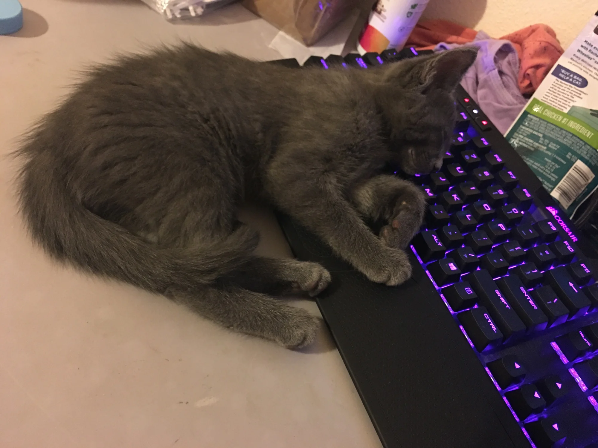
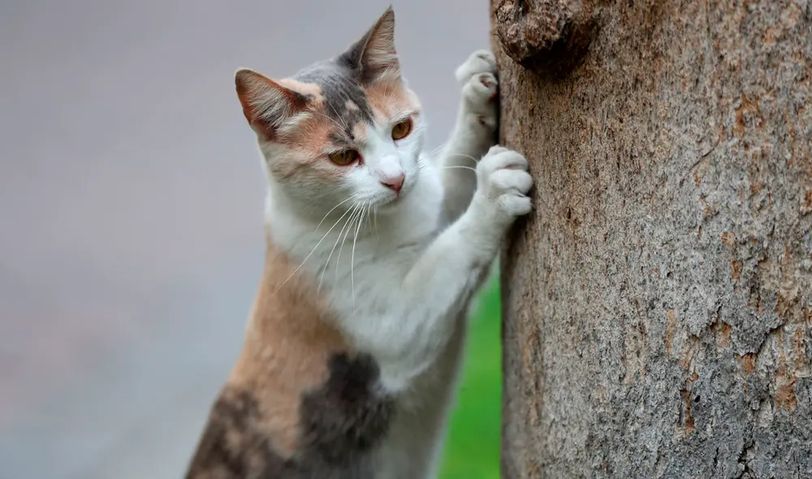
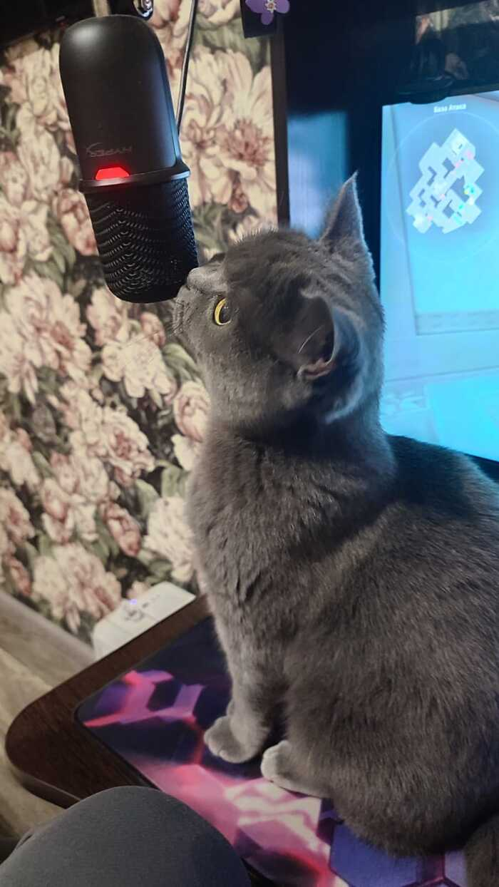

Simón
Edad: 8 meses
Travesura: Experto derribando lápices.Cariñoso y amante de dormir sobre los teclados de computadora.
Ver más »
Edad: 8 meses
Travesura: Experto derribando lápices.Cariñoso y amante de dormir sobre los teclados de computadora.
Ver más »
Edad: 1 año
Travesura: Campeona de parkour nocturno.Independiente, curiosa y dueña absoluta del sofá principal.
Ver más »
Edad: 5 meses
Travesura: Asesino de cordones de zapatos.Muy activo, juguetón y ronroneador profesional de alta frecuencia.
Ver más »
Edad: 2 años
Travesura: Catadora de plantas de interior.Tranquila, elegante y observadora silenciosa de atardeceres.
Ver más »
Edad: 3 años
Travesura: Devorador de bolsas plásticas.Un gigante noble al que le encanta recibir mimos en la barbilla.
Ver más »
Edad: 7 meses
Travesura: Alpinista de cortinas de seda.Energética, astuta y experta cazadora de insectos imaginarios.
Ver más »
Edad: 4 meses
Travesura: Ladrón profesional de calcetines.Curioso y tierno, siempre buscando un rincón cálido para dormir.
Ver más »
Edad: 1 año y medio
Travesura: Inspección obligatoria de platos ajenos.Elegante, protectora y sumamente inteligente.
Ver más »
Edad: 2 años
Travesura: Rey indiscutible del drama felino.Imponente pero sumamente dócil con quien se gana su confianza.
Ver más »
Edad: 9 meses
Travesura: Perforadora oficial de cajas de cartón.Alegre, juguetona y compañera ideal para tardes de películas.
Ver más »
Edad: 3 años
Travesura: Acaparador de las mejores cobijas.Gatito regordete y bonachón, amante de las siestas largas.
Ver más »
Edad: 6 meses
Travesura: Persecución serial de rayos láser.Tierna, muy sociable con otros gatos y llena de vitalidad.
Ver más »